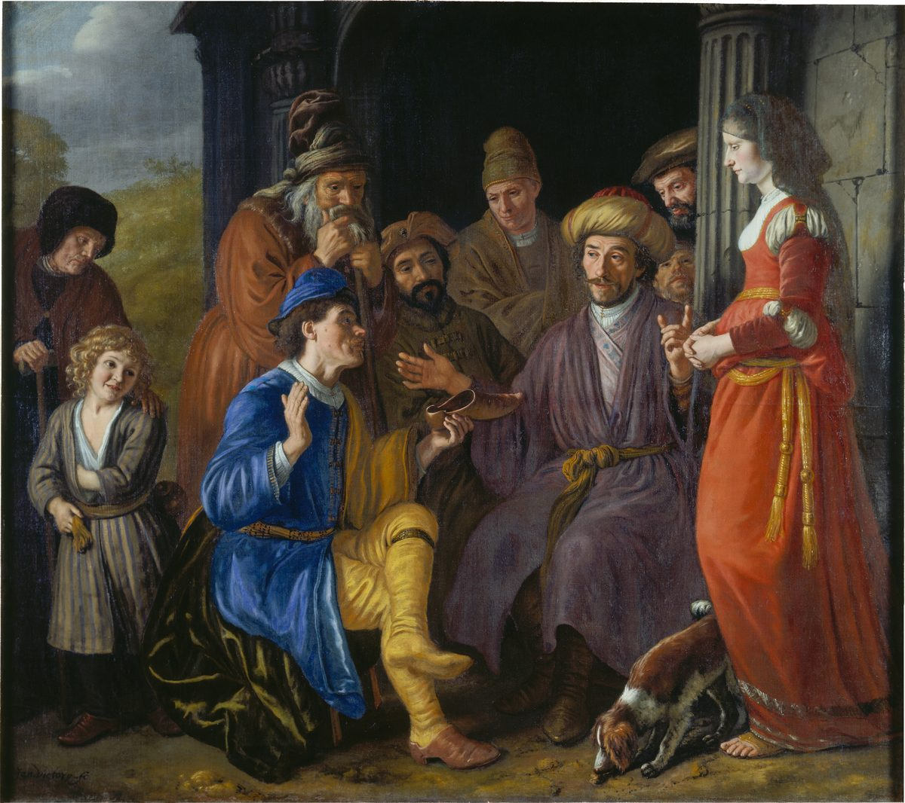

Ruth 4 — The Mister Translation

Jan Victors, a pupil of Rembrandt, paints verses 7–9 as a Dutch street scene: the nearer redeemer, seated, holds out his shoe to Boaz before the elders, “and this was the attestation in Israel”, while Ruth stands at the right. The old woman and the child at the left may be meant for Naomi and the son to come.
.png){kind=link}
Translator's Notes — verse by verse
“So-and-so.” Boaz goes up to the gate, the town’s place of business and judgment, “and look — the redeemer of whom Boaz had spoken was passing by”, as if on cue. Boaz calls him peloni almoni, “so-and-so”, the phrase for a name left out; spelled as here, it stands in two verses of the Hebrew Bible, here and in the king of Aram’s “such and such a place” (2 Kings 6:8). The man who will not raise up a name for the dead is never given one himself. The ASV has “Ho, such a one! turn aside, sit down here”; the NWT 1984 “do sit down here, So-and-so”; the NIV “Come over here, my friend”. The Greek has “hidden one”.
Naomi’s field. Boaz takes “ten men of the elders of the city” as witnesses, and only now does the book mention land: “The portion of the field that belonged to our brother Elimelech, Naomi … is selling.” A field the family had kept in Elimelech’s name must stay in the clan, and buying it back is the redeemer’s first duty (Leviticus 25:25, now on these pages). The ASV has “Naomi … selleth the parcel of land, which was our brother Elimelech’s”; the NWT 1984 “Naomi … must sell”.
“If he will not redeem it.” Boaz says he thought to “uncover your ear”, to tell him plainly. Then, speaking to the man, he says “if he will not redeem it”: the Hebrew turns to the third person, as if speaking past him to the elders. The Greek and many versions smooth it to “you”: the ASV has “but if thou wilt not redeem it, then tell me”, and the NWT 1984 “but if you will not repurchase it, do tell me”. The man answers at once, “I will redeem it.”
The field comes with Ruth. “On the day you buy the field from the hand of Naomi, you buy it also from Ruth the Moabite, the wife of the dead man, to raise up the name of the dead on his inheritance.” The words take up the brother-in-law’s duty in the law, that the widow’s firstborn “shall stand in the name of his dead brother” (Deuteronomy 25:6, now on these pages). “To raise up the name of the dead” stands in two verses of the Hebrew Bible, here and at verse 10. The ASV has “thou must buy it also of Ruth the Moabitess”; the NIV “you also acquire Ruth the Moabite”; the Douay “thou must take also Ruth the Moabitess”.
“I acquire” or “you acquire”. The written Hebrew has qaniti, “I acquire”, and the margin qanita, “you acquire”. Read as written, Boaz says: buy the field if you like, but I am taking Ruth, and her son will claim the field for the dead man’s name. Read with the margin, the field and the widow go together. The Greek follows the margin, “you must acquire her too”, and so does this translation. The verb is qanah, “buy, acquire”, which runs through the chapter.
“Lest I ruin my own inheritance.” The redeemer withdraws: “I cannot redeem it for myself, lest I ruin my own inheritance. Redeem my redemption for yourself.” Money spent on a field that would pass to Ruth’s son, in Mahlon’s name, would come out of his own children’s share. Josephus has him say he already had a wife and children (Antiquities 5.334, numbered 5.9.4 in Whiston). The ASV has “lest I mar mine own inheritance: take thou my right of redemption on thee”; the NWT 1984 “for fear I may ruin my own inheritance”.
“Formerly in Israel.” The narrator stops to explain a custom the first readers no longer knew: “this was the custom formerly in Israel concerning redeeming and concerning exchanging … a man drew off his sandal and gave it to his neighbour”. The word for “the attestation” stands in one verse of the Hebrew Bible. The ASV has “Now this was the custom in former time in Israel concerning redeeming and concerning exchanging”; the NWT 1984 “A man had to draw his sandal off and give it to his fellow”.
Deuteronomy’s sandal. The law has a sandal too, but there the widow pulls it off the brother-in-law who refuses her, “and spit in his face”, and his house is called “the house of him whose sandal was pulled off” (Deuteronomy 25:9–10, now on these pages). In Ruth the man draws off his own sandal, there is no shame, and the narrator calls it a custom of trade. Josephus merges the two: he has Ruth loose the man’s shoe and spit in his face “according to the law” (Antiquities 5.335).
“Acquired.” “You are witnesses today that I have bought all that was Elimelech’s … And also Ruth the Moabite, the wife of Mahlon, I have acquired as my wife”: the same verb, qanah, for the field and the wife. The purpose is the law’s, “so that the name of the dead is not cut off from among his brothers and from the gate of his place”; the clause stands in one verse of the Hebrew Bible. The ASV has “Moreover Ruth the Moabitess, the wife of Mahlon, have I purchased to be my wife”; the NWT 1984 “I do buy for myself as a wife”; the NIV “I have also acquired Ruth the Moabite”.
“Built the house.” The gate answers, “Witnesses”, and blesses the bride: “like Rachel and like Leah, the two of whom built the house of Israel”. The verb is banah, “build”, the verb of Rachel’s own hope, “I too may be built up through her” (Genesis 30:3), and of the law’s rebuke, “the man who will not build up his brother’s house” (Deuteronomy 25:9), both now on these pages. Then: “may you do valiantly in Ephrathah”, ve-aseh chayil, the chayil of Boaz and of Ruth (Ruth 3:11, now on these pages). Ephrath is Bethlehem’s other name, where Rachel was buried (Genesis 35:19, now on these pages). The ASV has “which two did build the house of Israel: and do thou worthily in Ephrathah”; the NWT 1984 “both of whom built the house of Israel”.
The house of Perez. “May your house be like the house of Perez, whom Tamar bore to Judah”: another widow who had to win the child the law owed her, and whose son broke through first (Genesis 38:29, now on these pages). “The house of Perez” stands in one verse of the Hebrew Bible. Boaz is of that house, as the genealogy will show. The ASV has “let thy house be like the house of Perez, whom Tamar bare unto Judah”.
“Jehovah gave her conception.” Ruth had borne no child in the ten years in Moab (Ruth 1:4–5, now on these pages); now “Jehovah gave her conception, and she bore a son”. The word herayon, “conception”, stands in two verses of the Hebrew Bible, here and in Hosea 9:11. The ASV has “Jehovah gave her conception, and she bare a son”; the NWT 1984 “Jehovah granted her conception”.
“Not left you without a redeemer.” The women who once asked “Is this Naomi?” now bless Jehovah “who has not left you without a redeemer today”, the shape of Naomi’s own blessing on the one “who has not forsaken his kindness” (Ruth 2:20, now on these pages). The redeemer here is the child. “A restorer of life”, meshiv nefesh, a phrase that stands in two verses of the Hebrew Bible, here and at Lamentations 1:16 (now on these pages), where Jerusalem weeps that “one to bring my life back” is far from her. The ASV has “who hath not left thee this day without a near kinsman”; the NWT 1984 “who has not let a repurchaser fail for you today”.
“Better than seven sons.” Ruth, “who loves you”, is “better to you than seven sons”: seven, the full number, for the woman who had lost two. Elkanah will say the same to barren Hannah, “Am I not better to you than ten sons?” (1 Samuel 1:8, now on these pages). The ASV has “who is better to thee than seven sons”; the Douay “much better to thee, than if thou hadst seven sons”.
“A son has been born to Naomi.” Naomi takes the child “and laid him in her bosom, and became his nurse”, and the neighbours name him, saying, “A son has been born to Naomi”: she who said “Jehovah has brought me back empty” (Ruth 1:21, now on these pages) holds a son. They call him Obed, “one who serves”; Josephus explains the name as “serving” and says he was to care for Naomi in her old age (Antiquities 5.336). The ASV has “There is a son born to Naomi”; the NWT 1984 “A son has been born to Naomi”.
David. The sentence ends, “He is the father of Jesse, the father of David.” In the order of most English Bibles, which set Ruth between Judges and Samuel, this is the first time David is named. The book that opened “in the days when the judges judged” (Ruth 1:1), in the time when “there was no king in Israel” (Judges 21:25, now on these pages), ends on the name of a king.
“These are the generations.” The book closes with the formula that divides Genesis, “these are the generations of”, toledot (as at Genesis 25:19, now on these pages). “The generations of Perez” stands in one verse of the Hebrew Bible. Ten names run from Perez to David, and Boaz is the seventh. The ASV has “Now these are the generations of Perez: Perez begat Hezron”; the NIV “This, then, is the family line of Perez”.
Names in the line. Nahshon son of Amminadab was the leader of Judah in the wilderness (Numbers 1:7), and Amminadab’s daughter Elisheba was Aaron’s wife (Exodus 6:23), both now on these pages. Boaz’s father is spelled two ways in two verses, Salmah (v. 20) and Salmon (v. 21); the spelling Salmon stands in one verse of the Hebrew Bible. The ASV and the KJV print “Salmon” both times, “Nahshon begat Salmon”; the Greek has Salman.
Matthew’s genealogy. Matthew copies the line name for name and adds two mothers to it: “Salmon fathered Boaz by Rahab, and Boaz fathered Obed by Ruth” (Matthew 1:5, now on these pages), so that the Moabite of this book and the Canaanite of Jericho stand in the line of the Messiah with Tamar of Genesis 38. Josephus ends his telling by saying he set it down to show how God raises people of ordinary birth to honour, as he raised David (Antiquities 5.337, numbered 5.9.4 in Whiston).
Patterns worth carrying forward
Where this translation keeps the words exact and distinct: “so-and-so” for peloni almoni; “redeem”, “redeemer” and “redemption” for the one root ga’al; “buy” and “acquire” for qanah, used of the field and of the wife; “to raise up the name of the dead”, as in Deuteronomy 25; “sandal”, as in Deuteronomy 25:9; “built the house” for banah; “do valiantly” for aseh chayil; “conception” for herayon; “a restorer of life” for meshiv nefesh; “these are the generations” for toledot, as in Genesis; and “fathered” for holid, as in Matthew 1.
Echoes paid. The nearer redeemer of Ruth 3:12 is met at the gate; Naomi’s “one of our redeemers” (2:20) ends in “not left you without a redeemer”; the “woman of valour” of 3:11 is blessed to “do valiantly”; the “empty” Naomi of 1:21 holds a son; and the law of Deuteronomy 25:5–10, Tamar’s story in Genesis 38, and the line of Perez all meet in Bethlehem.
Echoes planted. David, named here, is anointed in Bethlehem in 1 Samuel 16, and the same genealogy is set out again in 1 Chronicles 2:9–15. Neither is translated here yet.
Ruth ends here. The story continues in 1 Samuel 1 (now on these pages), with Hannah at Shiloh, and the line of this chapter runs on to David.